John's Recommended Products
Over the years I've installed, repaired and supported hundreds of computers for homes and small businesses.
Every product on this page is one I'd be happy to recommend to my own customers for its reliability, value and ease of use.
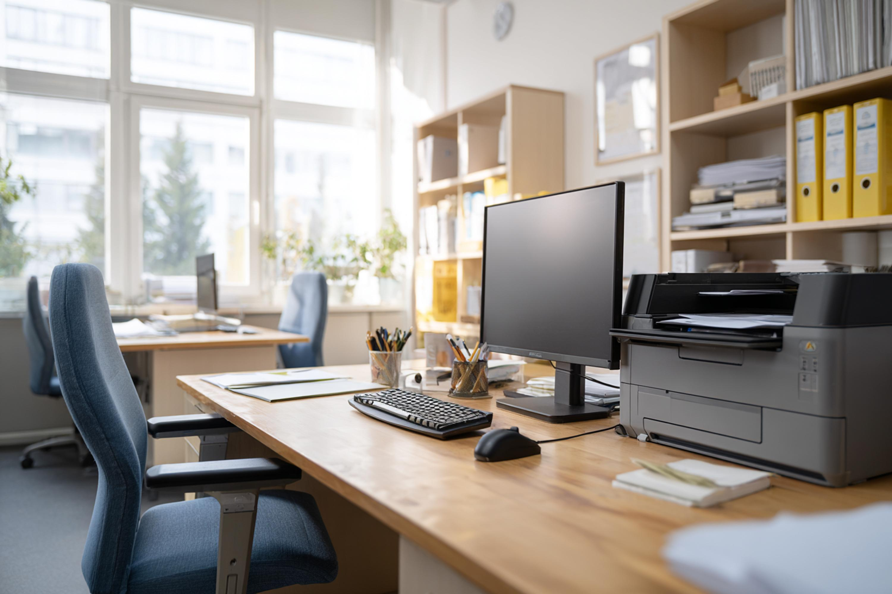
As an Amazon Associate I earn from qualifying purchases. This means I may receive a small commission if you buy through links on this page, at no extra cost to you. I only recommend products that I genuinely believe offer good quality and value.
Laptops
For everyday tasks such as email, web browsing and Microsoft Office, you don’t need an expensive laptop—but avoid the very cheapest models. I recommend at least 8GB of memory and a 256GB SSD, together with a modern Intel Core or AMD Ryzen processor.
John's Advice
Both laptops listed here meet those requirements and include standard USB-A ports for connecting devices such as a mouse, printer or memory stick. Microsoft Office is normally sold separately, so check whether you already have a Microsoft 365 subscription before purchasing.
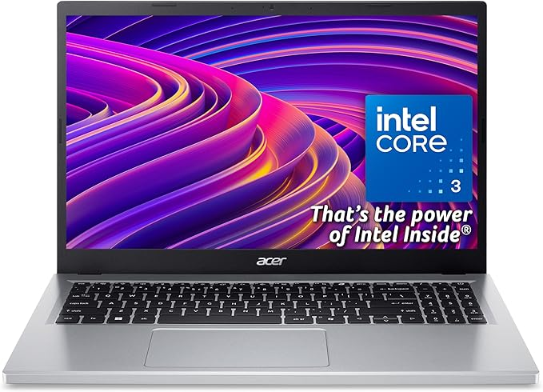
Acer Aspire Go 15 AG15-32P
Affordable Everyday Laptop
A reasonably priced laptop for everyday home or office use. Its Intel Core 3 processor, 8GB of memory and fast 256GB SSD provide enough performance for Microsoft Word, Outlook, web browsing, online shopping and video calls.
The 15.6-inch Full HD screen provides plenty of working space, while two standard USB-A ports make it easy to connect a mouse, printer, memory stick or external drive without an adaptor.
- Intel Core 3 N355 processor
- 8GB RAM
- 256GB SSD
- 15.6″ Full HD screen
- Two USB-A and two USB-C ports
Best for: Email, internet browsing, Microsoft Office and other everyday tasks.
Price Guide: £
View on Amazon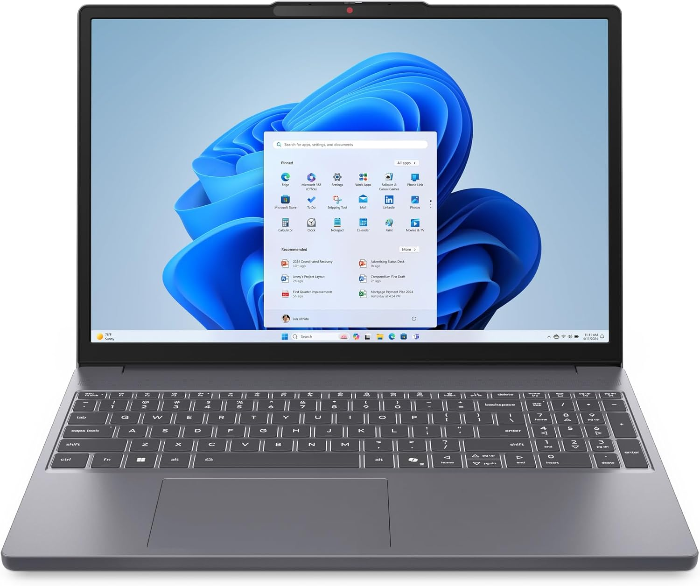
Lenovo IdeaPad Slim 3
DCS Recommended - Our Preferred Everyday Laptop
A well-rounded laptop with a faster processor and a particularly good screen for its price. The Intel Core 3 processor, 8GB of DDR5 memory and 256GB SSD deliver responsive performance for Microsoft Word, Outlook, web browsing, video calls and general home or office work.
Its 15.3-inch high-resolution screen provides additional vertical space, making documents and websites more comfortable to view. It also includes two standard USB-A ports, USB-C and HDMI connectivity.
- Intel Core 3 100U processor
- 8GB DDR5 RAM
- 256GB SSD
- 15.3-inch WUXGA display
- Two USB-A ports, USB-C and HDMI
- Windows 11 Home
Best for: Customers who want an affordable everyday laptop with better performance and screen quality.
Price Guide: ££
View on Amazon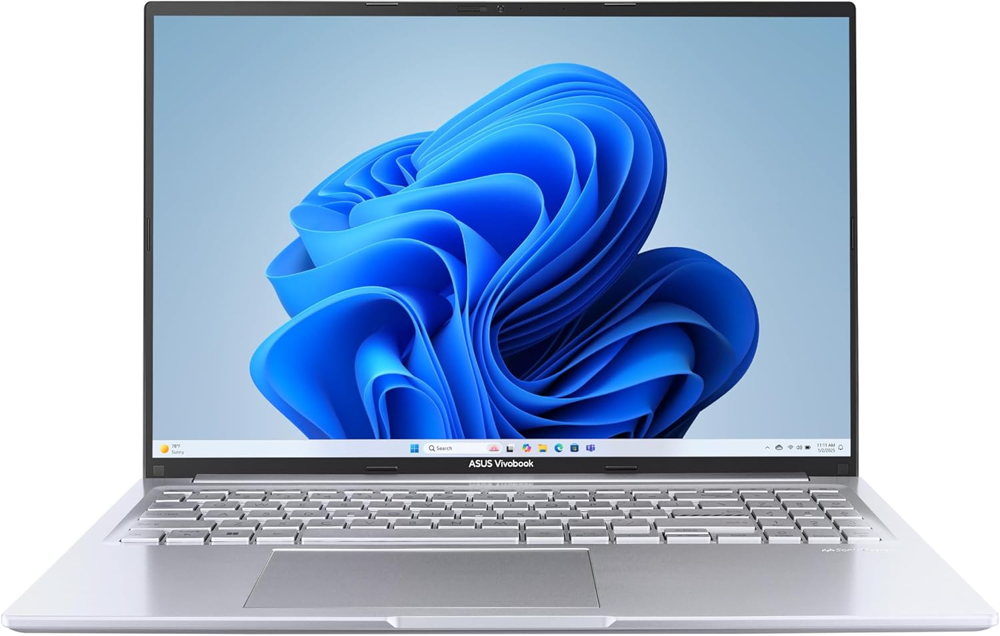
ASUS Vivobook 16 X1605VA
Great Mid-range Laptop
This offers unusually strong performance and storage for the price. It is suitable for demanding office multitasking, large spreadsheets, bookkeeping, business applications and occasional photo or video work. The large 16:10 screen is particularly useful for documents and spreadsheets.
Its compromises are a largely plastic construction and less portability than a premium business laptop. The powerful processor may also result in shorter battery life than an efficiency-focused ultraportable.
Important note: supplied with Windows 11 Home rather than Pro. This is entirely sufficient for most sole traders and small-business users, but an organisation requiring domain joining or centralised device management may need a Windows 11 Pro upgrade.
- Intel Core i9-13900H processor
- 16GB RAM
- 1TB PCIe SSD
- 16-inch 1920×1200 WUXGA display
- USB-A, USB-C and HDMI
- Backlit keyboard
Best for: Business users who want strong performance, a large screen and generous storage for multitasking, spreadsheets, bookkeeping and demanding office applications without paying for a premium ultraportable.
Price Guide: ££
View on Amazon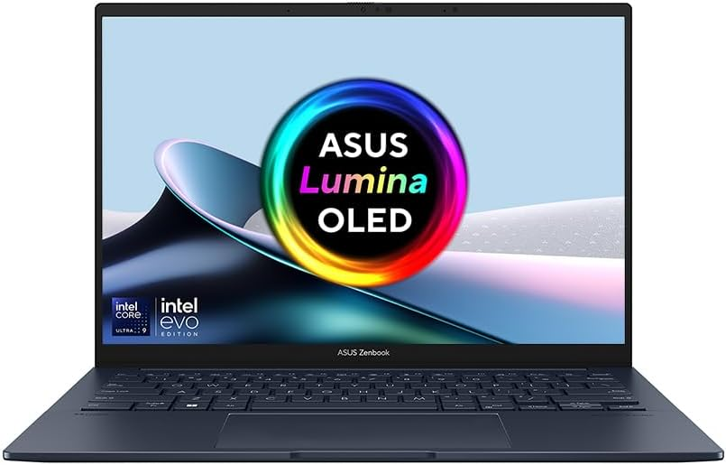
ASUS Zenbook 14 OLED UX3405CA
Premium Recommendation
This is the premium recommendation. It combines excellent performance with a much lighter, better-built chassis, a high-quality OLED display and enough memory for intensive multitasking, data analysis, creative work and several years of business use.
Important note: supplied with Windows 11 Home rather than Pro. This is entirely sufficient for most sole traders and small-business users, but an organisation requiring domain joining or centralised device management may need a Windows 11 Pro upgrade.
- Intel Core Ultra 9 285H processor
- 32GB LPDDR5x RAM
- 1TB PCIe SSD
- 14-inch WUXGA OLED touchscreen
- Intel Arc graphics
- USB-A, two Thunderbolt 4 ports and HDMI
- Wi-Fi 7
- Approximately 1.28kg
- Windows 11 Home
Best for: Professionals who want premium performance in a lightweight, highly portable laptop, with an excellent OLED screen and enough power and memory for intensive multitasking, data analysis and creative work.
Price Guide: ££
View on AmazonData Storage
Reliable storage is one of the best investments you can make. Whether you're upgrading an ageing computer, backing up precious family photos or expanding your office storage, these are products I regularly recommend to my own customers.
John's Advice
Backing up your data is far more important than buying the fastest drive. A reliable external SSD is one of the best investments you can make, protecting your photos, documents and memories if your computer ever fails. I always recommend having at least one backup that's kept separate from your computer.
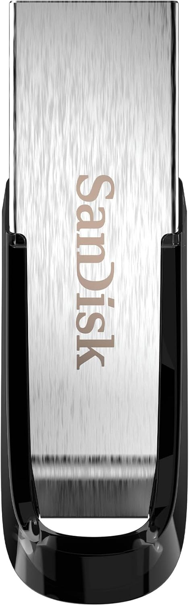
SANDISK Ultra Flair USB Type-A Flash Drive
Best Value
A fast, reliable external USB flash drive for everyday use. Available in multiple capacities (256GB, 512GB, 1TB), it's ideal for transferring files between computers, storing documents and backing up important data.
- USB-A connection
- Excellent reliability
- Available in multiple capacities
- Compatible with Windows and Mac
Best for: Home users, students and small businesses.
Price Guide: £
View on Amazon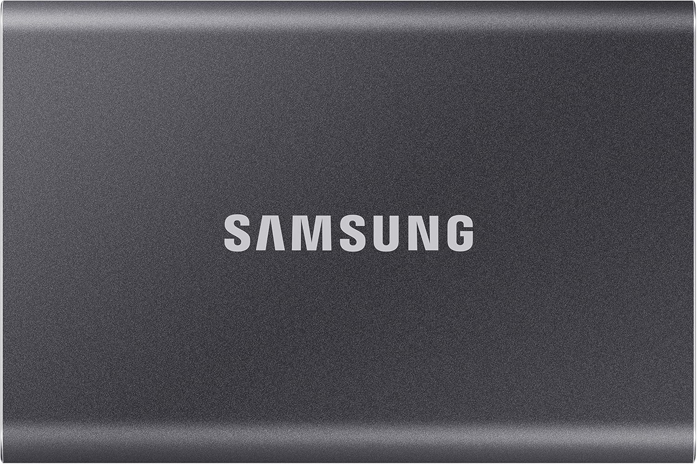
Samsung T7 Portable SSD
DCS Recommended
A fast, reliable external SSD that's ideal for backups, moving files and storing photographs. Compact, durable and considerably quicker than a traditional external hard drive.
- USB-C connection
- Excellent reliability
- Available in multiple capacities
- Compatible with Windows and Mac
Best for: Home users, students and small businesses.
Price Guide: ££
View on Amazon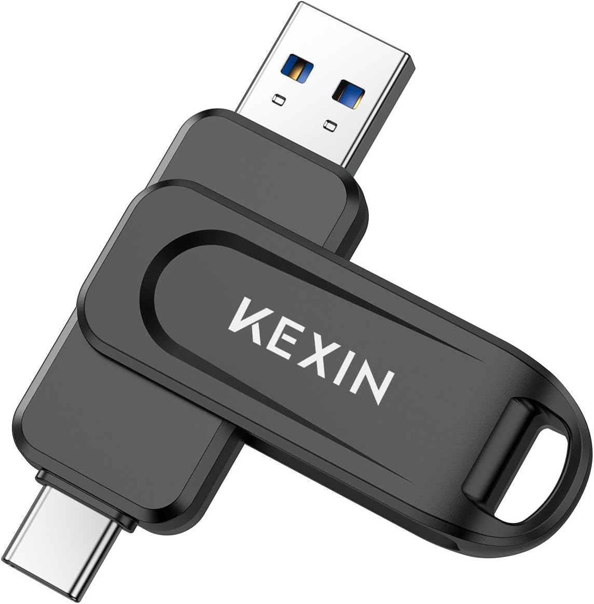
KEXIN 64GB USB-C & USB-A Flash Drive
Most Useful
A useful little flash drive with both USB-C and traditional USB-A connections. It's particularly handy for transferring files between newer laptops, tablets and phones with USB-C and older computers that still use standard USB-A ports.
- 64GB storage capacity
- USB-C and USB-A connectors on one drive
- USB 3.0 / USB 3.2 Gen 1
- Transfer speeds up to 100MB/s
- 360° swivel design protects the connectors
- Compatible with Windows, macOS, Linux and supported Android devices
- Small and lightweight
Best for: Moving documents, photographs and other files between USB-C and USB-A devices without needing an adapter.
Price Guide: £
View on AmazonKeyboards and Mice
A good keyboard and mouse can make a surprising difference to your comfort and productivity, especially if you spend several hours a day at your computer. These are reliable, well-built products that I regularly recommend for home users, home offices and small businesses.
John's Advice
You'll use your keyboard and mouse more than almost any other part of your computer. Choosing comfortable, well-built peripherals can reduce fatigue and make everyday tasks much more enjoyable. It's often worth spending a little more for something you'll use every day.
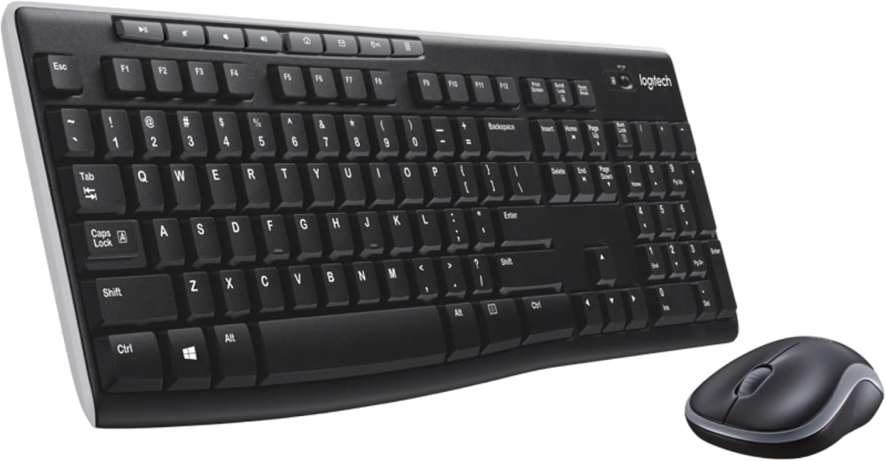
Logitech MK270 Combo
DCS Recommended
A dependable full-size wireless keyboard and mouse set with a familiar UK layout, comfortable keys and useful shortcut buttons.
- UK QWERTY
- Wireless freedom
- Deep-profile keys
- 8 shortcut keys
Best for: Home Offices and Small Businesses.
Price Guide: £
View on Amazon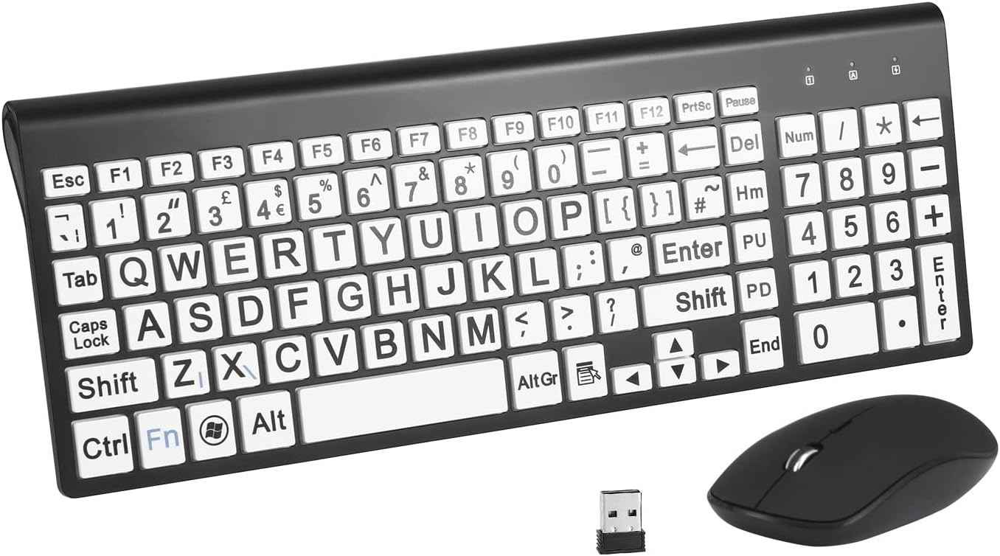
Large Print Keyboard and Mouse
DCS Recommended
Easy to see in low light, designed for those with visual impairments or learning to type.
- Large print keyboard
- High contrast keys
- Full size keyboard
- Comes with wireless mouse
Best for: Older people, users with low vision, and anyone who finds standard keyboard lettering difficult to read.
Price Guide: £
View on AmazonHome and Office Printers
Choosing the right printer isn't always straightforward. Whether you need to print the occasional document at home or produce high volumes for your business, these printers have been selected for their reliability, running costs and overall value for money.
John's Advice
The cheapest printer is rarely the cheapest to own. Before buying, consider the cost of replacement ink or toner as well as the purchase price. For most home users, an EcoTank printer offers excellent long-term value, while a monochrome laser printer is hard to beat for fast, reliable document printing.
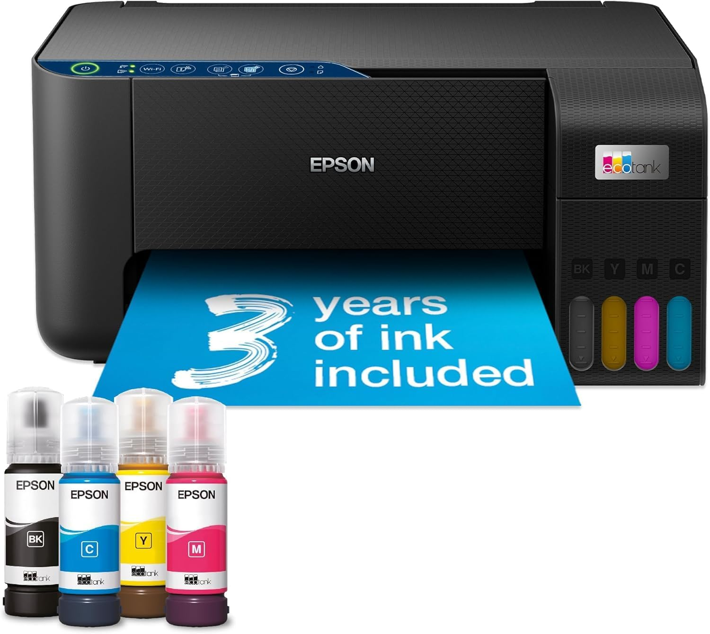
Epson EcoTank ET-2861 Ink Tank Printer
DCS Recommended
A good quality printer for busy home use. It has wireless connectivity and supports A4 printing, copying and scanning.
Top Tip: There is no need to take out the monthly subscription for ink. You can buy the ink bottles separately and refill the tanks yourself. This is much cheaper than paying for a subscription.
- Visible front-mounted ink tanks
- Wi-Fi connectivity
- Prints on A4 paper, envelopes and glossy photo paper
- Printing, scanning and copying
Best for: Home users, students and families who want low running costs over the long term. EcoTank printers are consistently recommended because of their very low cost per page.
Price Guide: ££
View on Amazon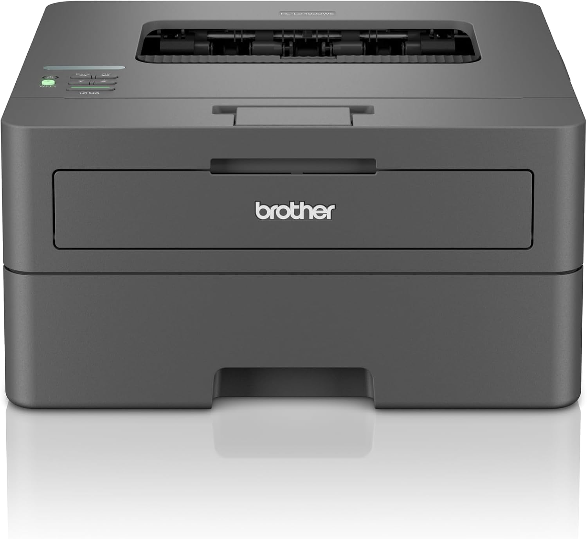
Brother HL-L2400DW Mono Laser Printer
Best Value
Fast, single function, automatic 2-sided printer with wireless connectivity. This printer only prints in black and white, but is ideal for home offices and small businesses that need to print documents quickly and reliably.
- Fast, crisp black-and-white printing
- Up to 30 PPM print speed
- Very reliable
- Toner lasts much longer than cartridges
Best for: Small businesses, accountants, tradespeople and anyone printing invoices, quotations and letters. Brother's mono laser printers have a long-standing reputation for reliability and low running costs, making them a strong choice for office document printing.
Price Guide: £
View on AmazonMonitors
The right monitor and accessories can make your computer more comfortable to use and help you work more efficiently. From everyday home displays to larger office monitors and essential peripherals, these are products I trust to deliver excellent performance and long-term reliability.
John's Advice
A good monitor can transform your computing experience. If you spend several hours a day at your computer, I generally recommend a 27-inch IPS display with QHD resolution. The sharper text and extra screen space make work more comfortable and can even help reduce eye strain.
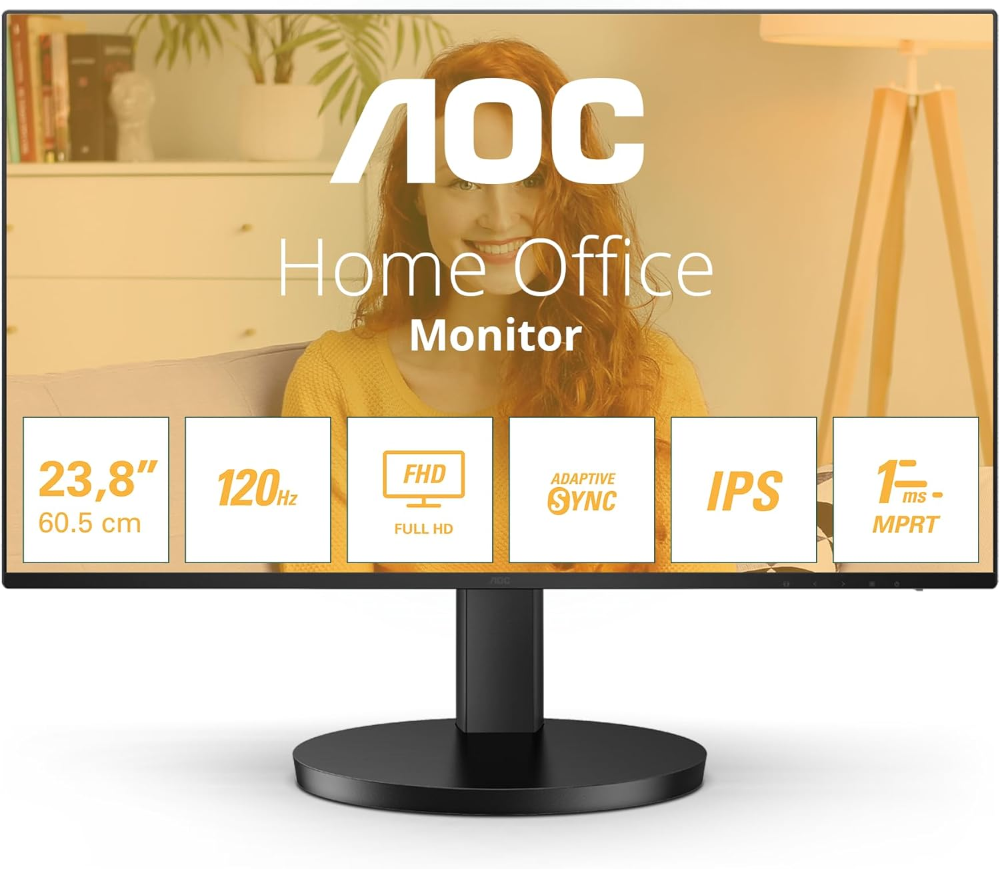
AOC 24B3HA2 24-inch Full HD Monitor
Best Value
AOC 24B3HA2 24 inch FHD Monitor 120Hz with built-in speakers. IPS panel with vivid colours for work and entertainment.
- 24" Full HD IPS display
- Excellent colour and viewing angles
- Slim bezels
- Great value for money
Best for: Home users, students and general everyday computing.
Price Guide: £
View on Amazon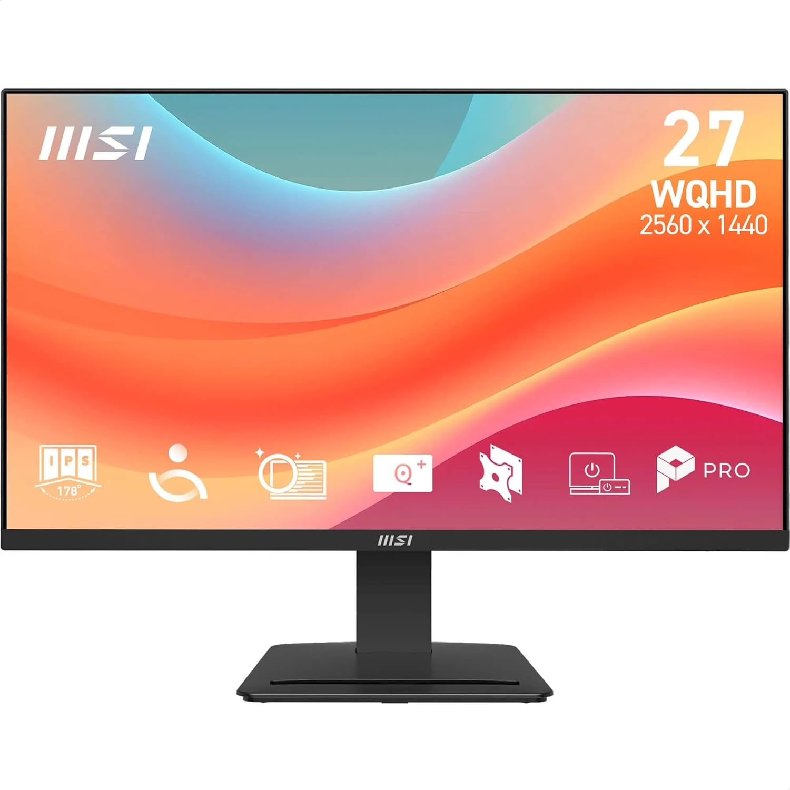
MSI PRO MP273Q E7 27-inch WQHD Monitor
DCS Recommended
2560x1440 IPS, 75Hz, 1ms, HDR ready, Adaptive-Sync, Eye care. This is probably the monitor I'd recommend to most DCS customers.
- 27" is the ideal size for productivity
- Sharp QHD (2560 × 1440) resolution
- IPS panel
- Comfortable for long periods of use
Best for: Home offices, remote workers, students and anyone spending several hours each day at a computer.
Price Guide: ££
View on Amazon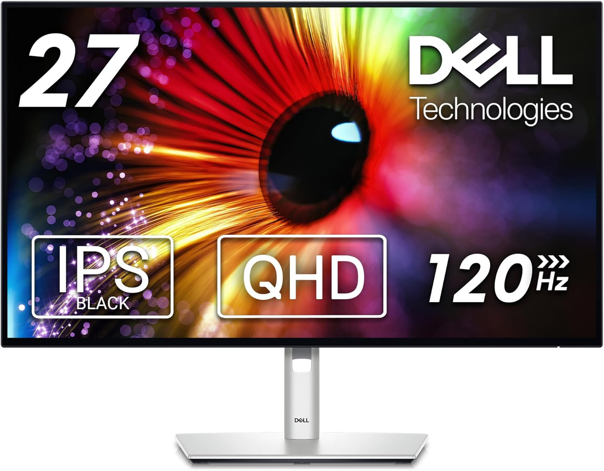
Dell UltraSharp U2724D 27-inch Monitor
Premium Choice
Dell's UltraSharp range has long been one of the best choices for business users thanks to its excellent ergonomics, colour accuracy and build quality. It's a favourite for professional office environments and remains highly regarded in expert reviews.
- Exceptional build quality
- QHD IPS display
- Fully adjustable ergonomic stand
- USB hub
- Designed for all-day professional use
Best for: Business users, professionals and anyone wanting a monitor they'll happily use for many years.
Price Guide: £££
View on AmazonNeed advice before buying?
If you're unsure which product is right for you, get in touch. I'm always happy to recommend the right equipment for your needs before you spend your money.
Get In Touch